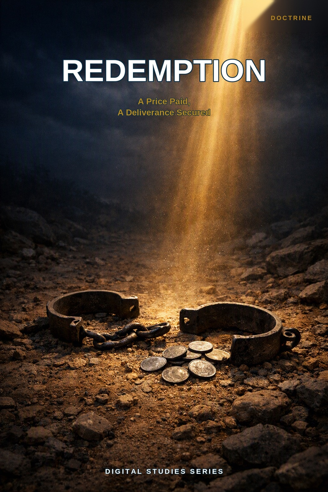
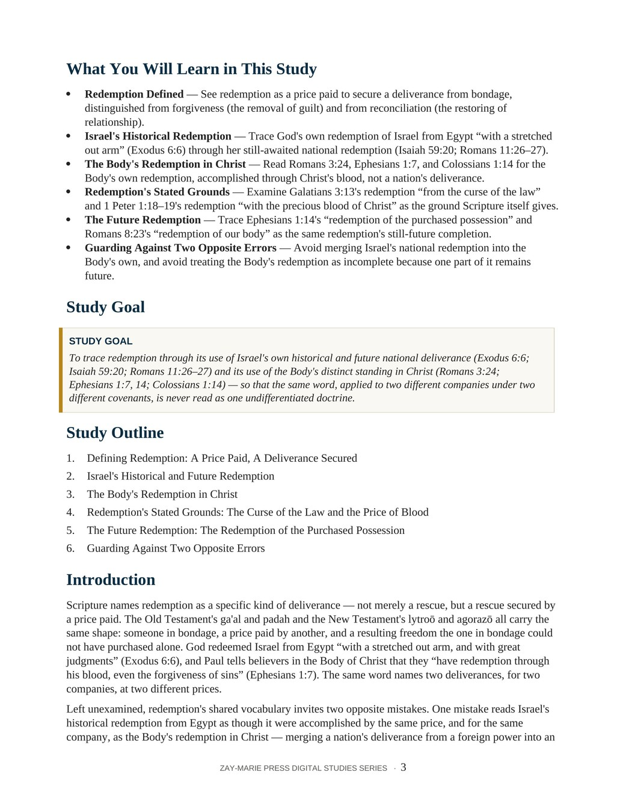
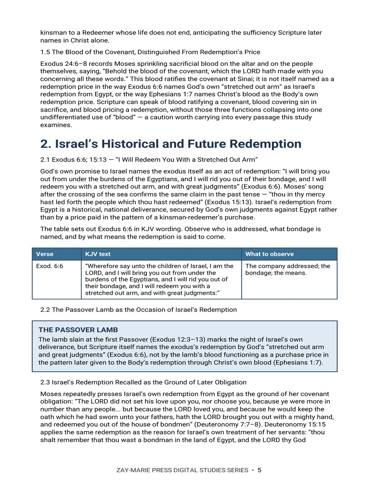

Redemption
A Price Paid, A Deliverance Secured
A Biblical Examination of Israel's Historical and Future Redemption and the Body's Redemption in Christ Under the Prophecy and Mystery Programs
God names the exodus itself as an act of redemption — “I will redeem you with a stretched out arm, and with great judgments” (Exodus 6:6) — and Paul later tells believers in the Body of Christ that they “have redemption through his blood, even the forgiveness of sins” (Ephesians 1:7). The same word, applied across the Old Testament's ga'al and padah and the New Testament's lytroō and agorazō, names a bondage, a price, and a resulting freedom — but not the same bondage, the same price, or the same company each time it appears.
This study traces redemption's shared vocabulary, Israel's historical deliverance from Egypt and her still-future national redemption, the Body's own redemption priced by Christ's blood, redemption's stated grounds in the curse of the law and the precious blood of Christ, and the future redemption of the purchased possession still awaited by both the believer and the groaning creation. It names the two opposite errors a careful reader must avoid: merging Israel's national redemption into the Body's own, and denying the believer's already-possessed redemption on the ground of its still-future bodily completion.
Two Redemptions, Traced on Their Own Terms
Scripture names redemption of Israel's own historical deliverance from Egypt (Exodus 6:6), of her still-future national deliverance (Isaiah 59:20; Romans 11:26–27), and of the Body's own standing in Christ (Romans 3:24; Ephesians 1:7, 14; Colossians 1:14) — one word, applied to more than one company, price, and moment. The word itself only ever says that a bondage has been answered by a price and a resulting freedom; it does not say which company receives it, what price is named, or whether the deliverance is already possessed or still awaited. Answered consistently by asking company, price, and timing of every redemption passage in view, those three questions keep Israel's redemption and the Body's redemption in Christ distinct without denying that Scripture names both, in their own settings, by the same sovereign God's own gracious act.
Readers who have studied Study 52 (Sonship and Adoption) may wonder whether redemption and adoption trace the same ground, since Galatians 4:4–5 names redemption as adoption's own stated basis in a single sentence. This study examines redemption itself as the described act — the bondage answered and the price paid; Study 52 examines the legal placing into sonship that this same redemption secures, the same verse answering two different questions, not the same question answered twice. Readers who have studied Study 46 (Secure in Christ) may likewise wonder whether this study's own reference to the Spirit's seal and earnest (Ephesians 1:13–14) duplicates that study's subject; Study 46 argues from that seal and earnest for the believer's settled security against the Hebrews 6:4–6 warning, while this study reads the same verse only for what it says about redemption's own two-stage shape — a price already paid, and a possession not yet fully claimed. This study alone answers one narrower question: when Scripture applies the single word “redemption” to Israel's historical and future national deliverance and to the Body's own standing in Christ, what company, what price, and what timing does each occurrence actually name?
How These Studies Relate
Study 53 traces the two redemptions Scripture names — Israel's historical and future national deliverance and the Body's own redemption in Christ — and the discipline of company, price, and timing that keeps a shared word from becoming a shared doctrine.
Study 52 — Sonship and Adoption See the legal placing into sonship that this study's own Galatians 4:4–5 redemption secures, a distinct question from the price and bondage redemption itself names.
Study 46 — Secure in Christ Read the fuller argument for the believer's settled security that this study's own Ephesians 1:13–14 reference touches only for what it says about redemption's still-future stage.
Study 12 — The New Covenant Examine the New Covenant's own ratifying blood in its own setting, distinguished in this study from the price that redemption itself names.
Study 55 — Reconciled to God Follow Christ’s work into the distinct question of former enmity and peace with God, which redemption’s price makes possible.
Trace Two Redemptions on Their Own Terms
The Vocabulary of Redemption
Trace the Old and New Testament vocabulary of redemption (ga’al, padah, lytroō, agorazō), noting the bondage, the price and the deliverance each passage names, and how Ephesians 1:7 sets redemption beside forgiveness.
Israel's Historical Redemption
Follow God's redemption of Israel “with a stretched out arm” (Exodus 6:6) through Deuteronomy, the firstborn and Jubilee laws, and Isaiah 59:20 with Romans 11:26–27, noting the company addressed and the price stated.
Redemption Beside Redemption
Read Romans 3:24, Ephesians 1:7, Colossians 1:14 and Titus 2:14 side by side, noting the price, the tense and the result each one names.
Redemption's Stated Grounds
Examine Galatians 3:13 and 1 Peter 1:18–19, and set Hebrews 9:12 and 10:11–14 beside Israel's repeated offerings, asking what each passage names as the bondage and the price.
The Future Redemption
Work through Ephesians 1:13–14, Romans 8:19–23 and 1 John 3:2, asking what is stated as already possessed and what is still awaited.
Company, Price and Timing
Practise the three questions of company, price and timing on every redemption passage, and test each reading against the passages already traced.
Examine the Passages for Yourself
Exodus 6:6
Where God promises to redeem “with a stretched out arm, and with great judgments,” and the company he addresses.
Isaiah 59:20; Romans 11:26–27
The Redeemer who comes “to Zion” in Isaiah, and how Paul cites the promise and its covenant in Romans 11.
Romans 3:24
The ground and the place Paul names for redemption, set beside the word “propitiation.”
Ephesians 1:7
The tense, the price and the result Paul names, and how they compare with Colossians 1:14.
Galatians 3:13
The bondage and the price named for redemption “from the curse of the law.”
1 Peter 1:18–19
What the price is set against, and what Peter names instead.
Ephesians 1:14
What the Spirit is called, and the time Paul says it lasts “until.”
Romans 8:23
What Paul says believers are waiting for, and how he defines it.
A Price That Never Requires Renewal
“By his own blood entered in once into the holy place, having obtained eternal redemption for us” (Hebrews 9:12).
The word “eternal” marks a decisive break from every redemption pattern fixed within Israel's own law — the firstborn's five-shekel price and the Jubilee's harvest-counted price were both repeatable transactions internal to Israel's own covenant economy. Christ's redemption is obtained once, and its adjective is not “national” or “annual” but “eternal” — a price that never requires renewal.
Preview the Study Before You Purchase
Click any page to enlarge it for reading.



What You Will Learn
See the study's goal, outline, and the question it sets out to answer.


The Kinsman-Redeemer and the Exodus
See how the study traces the kinsman-redeemer pattern and God's redemption of Israel from Egypt.
A Focused Study Built for
Understanding and Teaching
19-Page In-Depth Biblical Study
A careful study of Israel's historical and future redemption and the Body's redemption in Christ, grounded in Exodus, Isaiah, Romans, and Ephesians.
6 Core Teaching Sections
Progress from redemption's legal definition through Israel's redemption and the Body's redemption to redemption's stated grounds, the future redemption, and the two opposite errors to avoid.
Key Distinctions to Retain
Keep the company, price, and timing of each redemption clear.
Review and Discussion Questions
Test the study's distinctions concerning company, price, and timing.
Teaching Outline
A structured outline for teaching both redemptions with precision.
Guided Further Study
Return to Israel's redemption, the Body's redemption, and the discipline of price and timing, each traced further with directed questions.
Scripture-Tracing Exercise
Trace the study's key passages from Exodus through Paul's letters in their own context.
Final Synthesis Exercise
Bring the evidence together in one coherent, Scripture-based explanation.
Redemption
19-page digital PDF · For personal use
Want More Than a Focused Study?
Digital Studies examine particular biblical subjects and difficult passages. The 40-lesson Biblical Hermeneutics course teaches a complete, repeatable method for establishing meaning in context, determining proper assignment, and making responsible application.